Community mission
Apply engineering to local challenges in health, education, agriculture, clean water, and disaster response, aligned with the UN Sustainable Development Goals.
 IEEE ENSIT
IEEE ENSIT
IEEE ENSIT / Humanitarian Technology
We partner with underserved communities and local organizations to address real needs with technology—from healthcare and education to clean water and disaster response.
How we work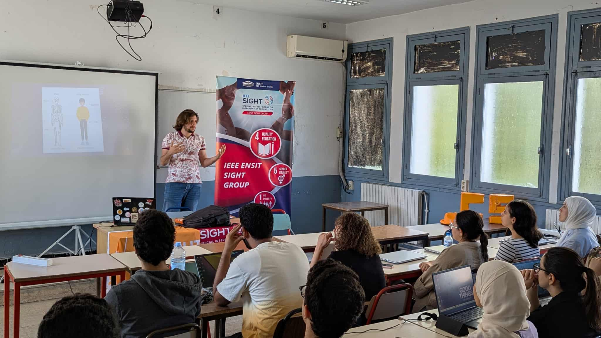
Engineering for everyone
IEEE SIGHT is a global network of IEEE volunteers who partner with underserved communities and local organizations to use technology for sustainable development.
Projects respond to locally identified needs in areas such as healthcare, education, agriculture, clean water, and disaster response. This community-led work supports the United Nations Sustainable Development Goals.
Key overview
Apply engineering to local challenges in health, education, agriculture, clean water, and disaster response, aligned with the UN Sustainable Development Goals.
Groups include at least six IEEE members, may welcome other volunteers, and are affiliated with an IEEE Section or Student Branch.
IEEE SIGHT offers funding opportunities, training, educational resources, and guidance for humanitarian technology projects.
Celebrated each April 28, SIGHT Day marks the submission of the first SIGHT group petition.
Global resources / Tunisia
The IEEE SIGHT portal shares membership information, funding opportunities, training, news, and guidance for starting or joining a group.
In Tunisia, IEEE Tunisia Section connects local SIGHT groups and hosts the annual SIGHT Day Congress. IEEE-ENSIT-SIGHT-GROUP ENSIT is one example of a student branch group working locally.
The people behind the impact
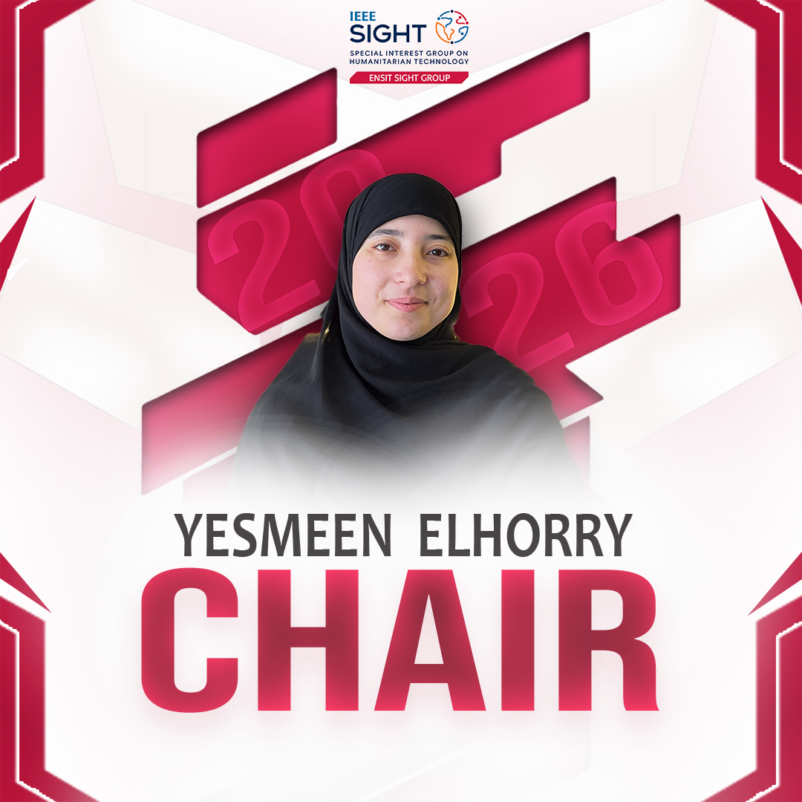
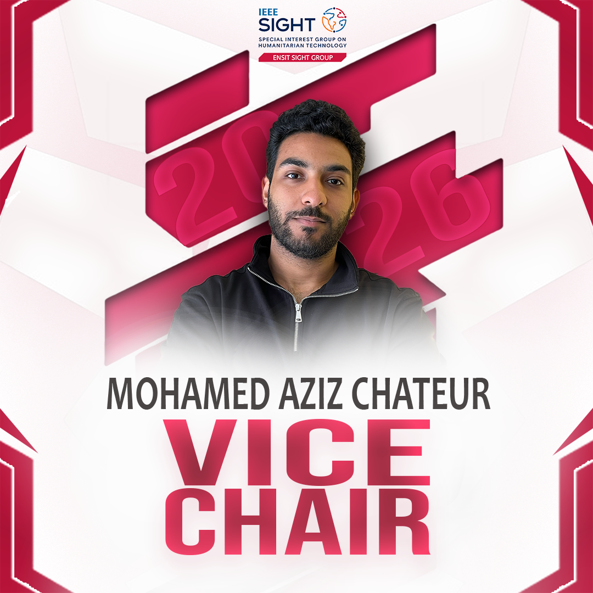
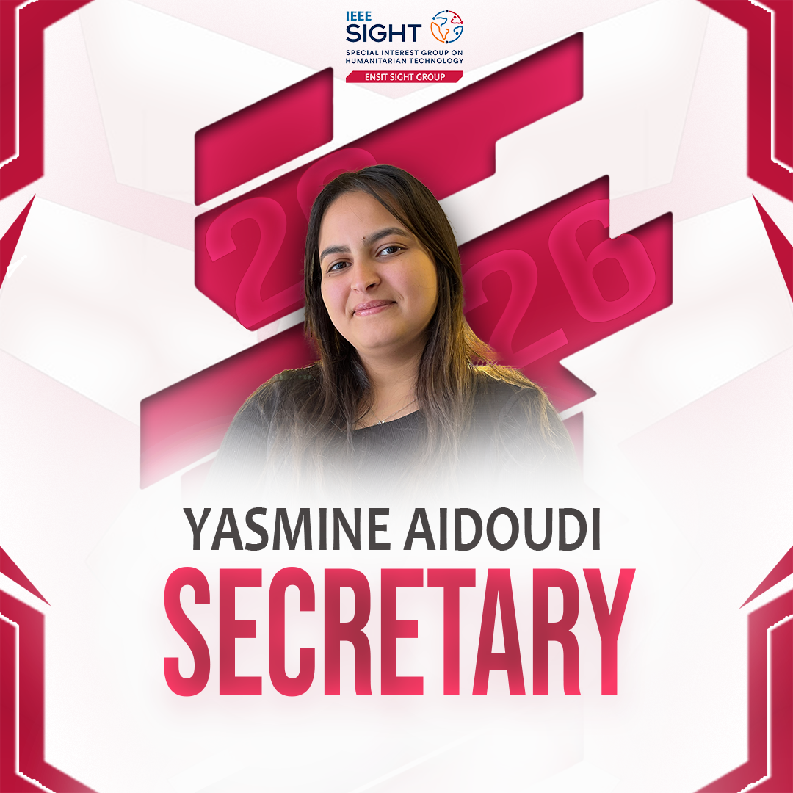
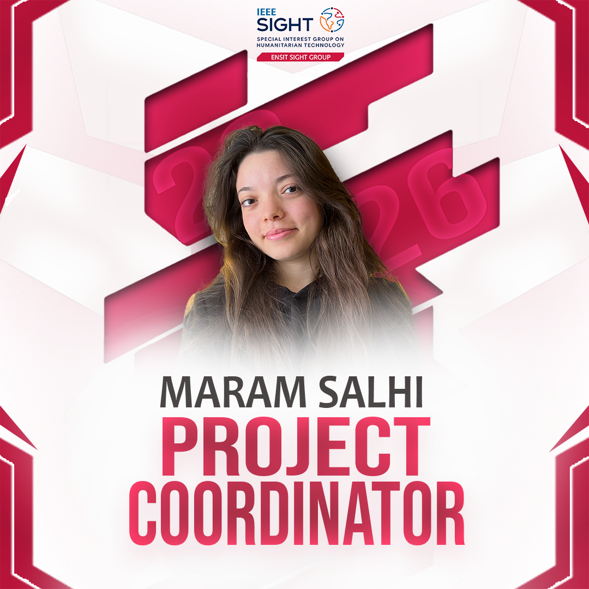
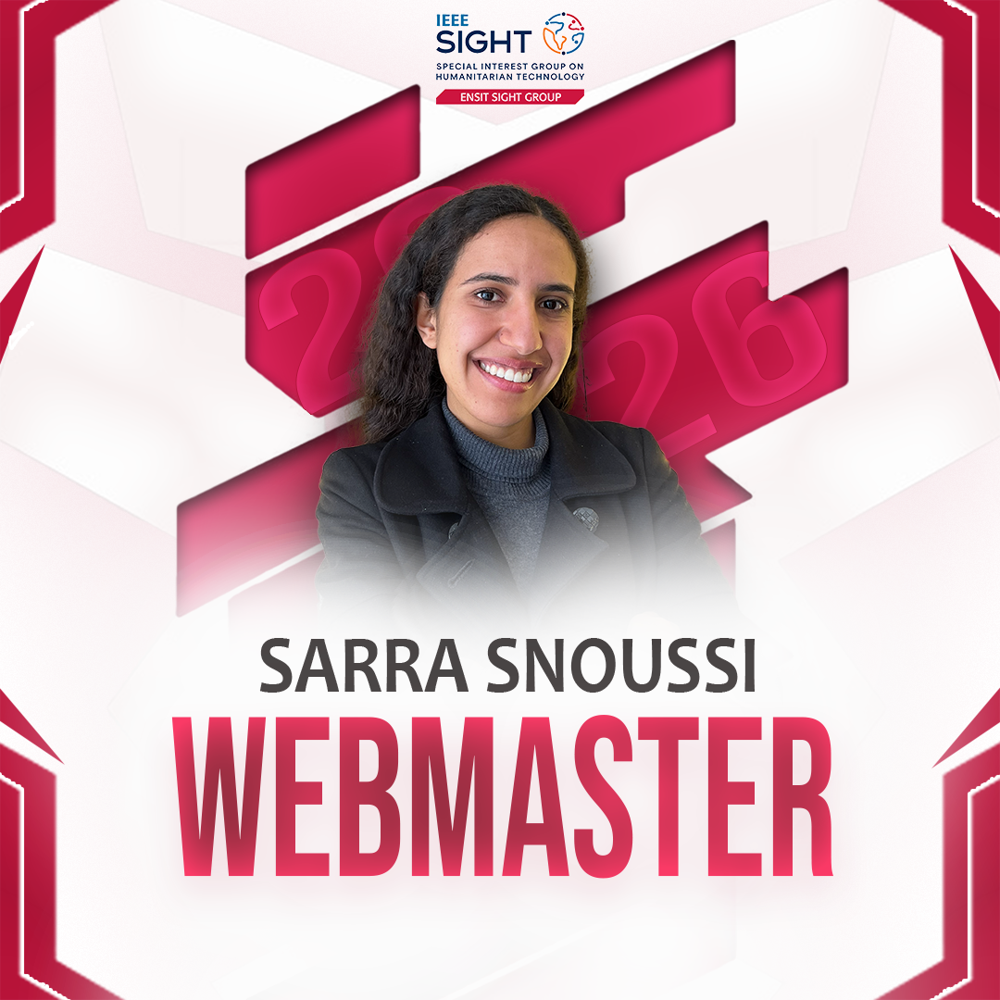
Technology in action
From community outreach to humanitarian innovation, our events turn shared knowledge into meaningful action.
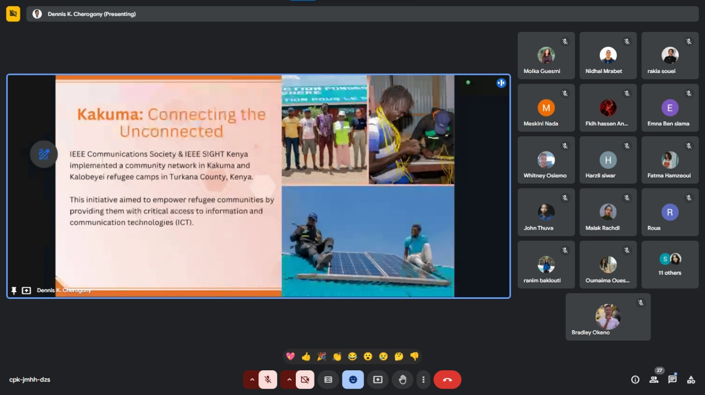
Exploring practical technology for community challenges.
Read more →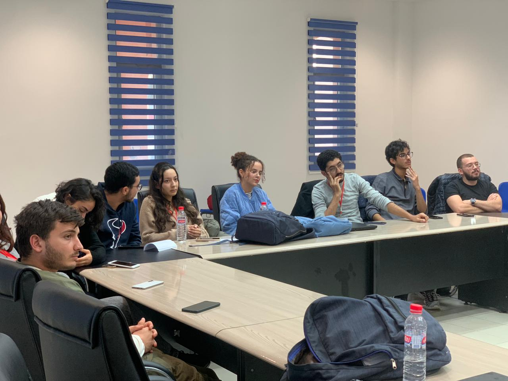
Making science, discovery, and imagination accessible.
Read more →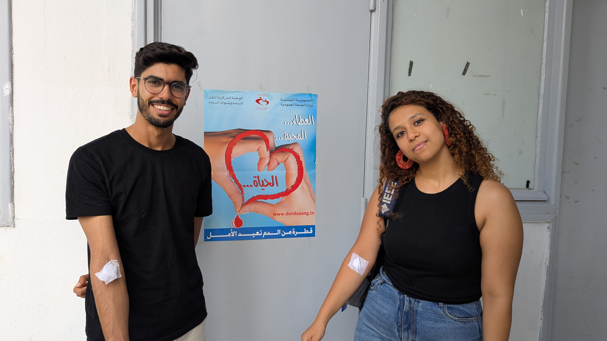
Volunteering together to support health and community care.
Read more →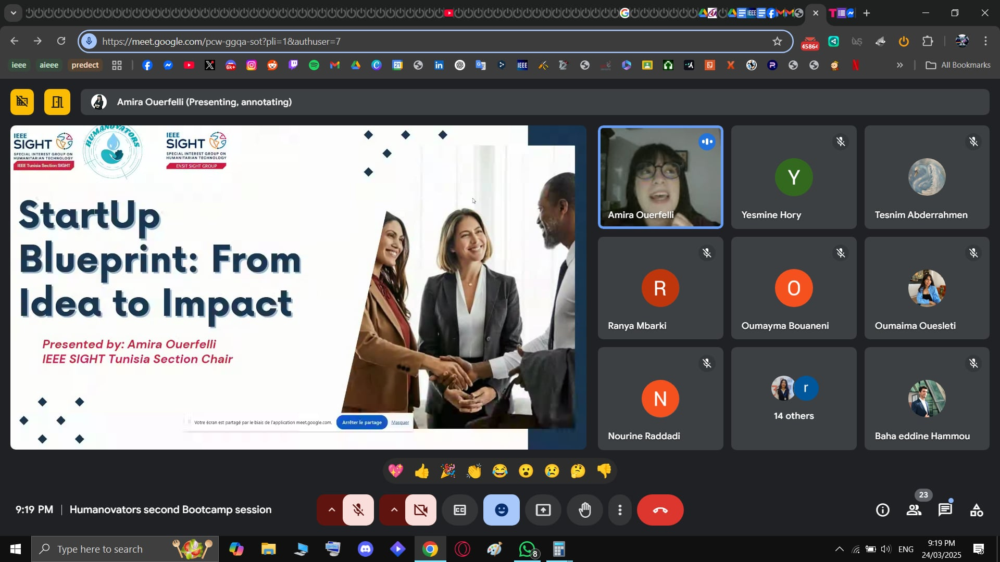
Learning the skills needed to turn ideas into impact.
Read more →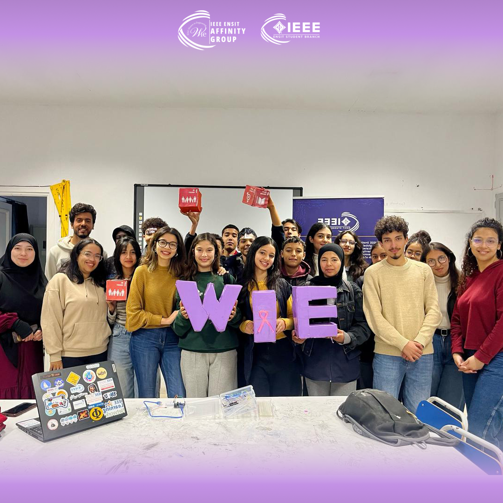
Raising awareness and standing beside young patients and families.
Read more →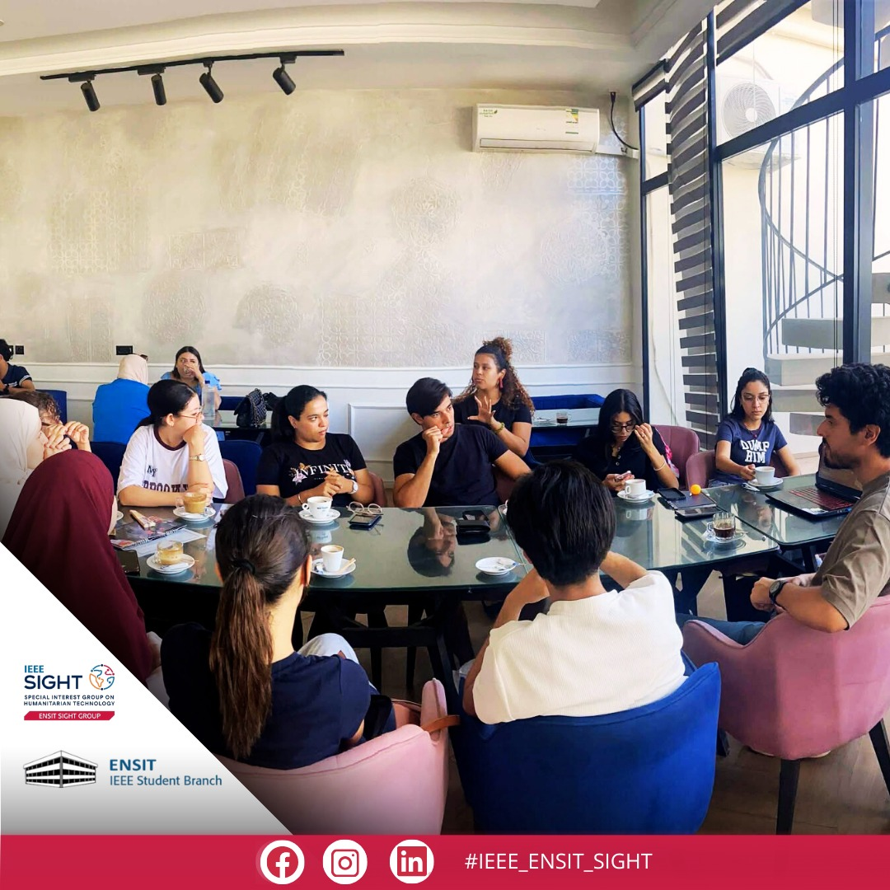
Sharing conversations, perspectives, and opportunities to serve.
Read more →